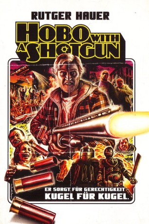
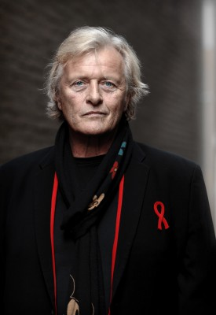

#4305 Hobo with a Shotgun
 
 IMDB-Wertung: 6.1 / 10
IMDB-Wertung: 6.1 / 10  Tomatometer: 66
Tomatometer: 66  Metascore: 0
Metascore: 0 
Ein Landstreicher (Rutger Hauer) zieht in eine Stadt namens Hope Town, in der das Gesetz nichts zu melden und das Verbrechen die Gegend beherrscht. Er macht sich jedoch nichts daraus und will dort als Landschaftsgestalter seinen Lebensunterhalt bestreiten. Dafür benötigt er jedoch einen Rasenmäher, der in einem Pfandhaus knappe 50 Dollar kostet. Um sich diesen kaufen zu können, geht er betteln. Dabei beobachtet er, wie die mörderischen Brüder Ivan und Slick, deren Vater „The Drake“ das Sagen in Hope Town hat, einen Jungen bedrohen. Nachdem die Prostituierte Abby erfolglos eingreift, schnappt sich der Landstreicher Slick und bringt ihn zur Polizeistation. Aufgrund eines perfiden Korruptionssystems wollen ihm die Gesetzeshüter jedoch nicht helfen. So macht es sich der Landstreicher zur Aufgabe, sich selbst um das verbrecherische Gesindel zu kümmern – inklusive pädophiler Weihnachtsmänner und Drogendealer – und kauft sich für sein erbetteltes Geld keinen Rasenmäher, sondern eine Shotgun…
Jahr: 2011
Dauer: 86 Minuten
FSK: (Banned)
Land: Kanada Studio: UFATonspuren: DTS - ,
Untertitel:
Auflösung: 1080p (1920x800) Größe: 8960 MB
Genre: Action, Komödie, Thriller
Regisseur: Jason Eisener
Drehbuch: William Flanagan
Soundtrack:
Darsteller:
-  Rutger Hauer als Hobo
- Pasha Ebrahimi als Bumfight Filmmaker
- Robb Wells als Logan
- Brian Downey als Drake
- Gregory Smith als Slick
- Nick Bateman als Ivan / Rip
- Molly Dunsworth als Abby
- Jeremy Akerman als Chief of Police
- Brian Jamieson als Santa
- George Stroumboulopoulos als TV Host
- Rhys Bevan-John als Thug #1 , uncredited
- Jason Eisener als Victim , uncredited
- Shawn Meunier als Additional Voices , uncredited
- Drew O'Hara als Otis
- Andre Haines als Large Man
- Agnes M. Laan als Prostitute
- Duane Patterson als Pimp
- Tim Dunn als Store Clerk
- Glen Matthews als Gang Leader
- Zach Tovey als Gang Member #2
- Alexander Rosborough als Gang Member #3
- Mark A. Owen als Coke Lord
- David Brunt als Dirty Cop
- Scott Vrooman als Rookie Cop
- Juanita Peters als Doctor #1
- Peter Simas als Grinder
- John Awoods als Doctor with Gun
- Scott Owen als Civilian
- Maddi Clarke als Mob member 2 , uncredited
- Rob Cotterill als (uncredited
- Michael Ray Fox als Doctor , uncredited
- Shayna Fried als (uncredited
- Larry Goldstein als Mob Member , uncredited
- Colin David MacDonald als Mob member , uncredited
- Eliese MacKinnon als Arcade Punk , uncredited
- Cadence MacMichael als Drake's Prostitute , uncredited
- Lauren Messervey als Dancing Prostitute , uncredited
- Keith Daniel Morrison als Bum Fighter , uncredited
- Gregory Richardson als Angry Citizen , uncredited
- Sam Tarasco als (uncredited
- Carolyn Thomas als Western Pigtailed Sharpshooter , uncredited
Datei: X:\FSK18-2011\Hobo with a Shotgun (2011, FSK(Banned), 1920x800).mkv seit 05.09.2016
Festplatte: FSK18
 Es gibt insgesamt 30 Filme in der Gruppe 'FSK18-2011'
Es gibt insgesamt 30 Filme in der Gruppe 'FSK18-2011'